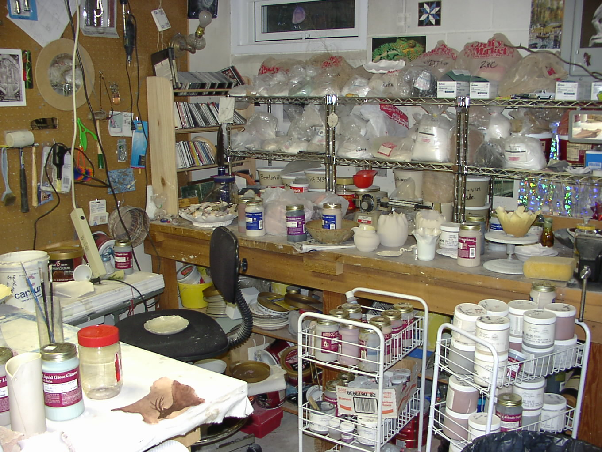

Survival 101
Welcome to Survival
If you are going to survive I would suggest learning more than hiding and hoping, you need to know how to fight, run, and use whatever you have around you to your advantage. You need to learn how to survive as well as hide. Here are some basic tips that will help with your survival.
Shelter
One of the first things that you need to survive is shelter. So when you need to stay away from the zombies without having to worry about getting eaten, go for something about ground.Try a tree house. A tree house is something that is well known but under used.
It is good to utilize because it is away from the zombies and it is easy to hide and disguise the tree house. If you are in a heavily wooded area it is possible to a series of tree houses and platforms to make travelling through the woods safer and easier.
Supplies
When trying to survive it is important that you maintain a certain amount of supplies.You will need weapons of any kind, food, and water.When storing the supplies you need to be aware that there may be others that may try to take them, so you will need to keep them hidden and locked up in some kind of container or locker.It is also wise to keep several locations in your area that you know are safe to keep emergency and spare supplies that you will need. A common mistake when storing supplies is keeping all of your supplies in one location without any emergency supplies for when something happens.For food it is good to grow your own food so that you will not need to rely heavily on scavenging.

Weapons
When working with weapons it is easy to over look some facts that could help when trying to defend yourself from zombies or other people.Here are some good tips that could help with your weapon's up-keeping.
Knife are some of the weapons that you will need when you have to defend yourself. However what is also important is how the condition of the knife is.
When you have a knife make sure that you also have something to sharpen it with. the sharpening instrument can also be used as a weapon as well and can give you one backup just in case. Also have a holster for the knife if the knife is constantly exposed to the elements it will wear out quicker.

Another tip that would be useful concerns a persons gun if they have one. It is important to keep track of all of the ammunition that you have for all of the guns that you own. That way it is not a guest on how much you have left and are less likely to waste bullets. It also helps when you are scavenging for supplies it will help you get an idea of what you need to look for and what to leave behind.
SURVIVE
These are only some tips that can be used in case of a zombie outbreak there are many more that you can use and more that you can make up. Just be sure to use some of these tips because you never know when you might need them. Good Luck with Your Survival.